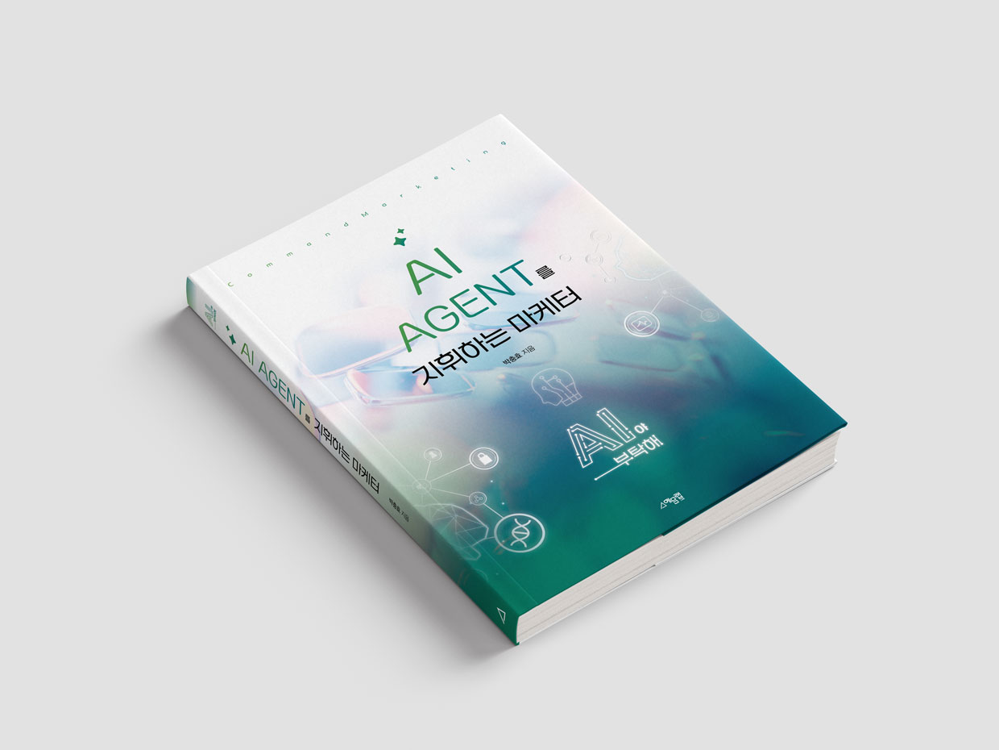

Role
Agent가 맡을 역할과 책임 범위
Command Marketing / New Book
일을 맡기고, 결과를 검수하고, 마케팅을 반복 가능한 시스템으로 설계하는 실무 가이드.
질문하는 마케터에서, 지휘하는 마케터로.
AI를 잘 쓴다는 것은 더 세련된 프롬프트를 외우는 일이 아닙니다.
무엇을 맡길지 결정하고, 필요한 맥락을 제공하며, 결과를 검수해 반복 가능한 업무 흐름으로 만드는 일입니다. 이 책은 도구가 바뀌어도 남는 마케팅 운영 체계를 다룹니다.
AI Maturity
역할별 Agent를 반복 업무에 배치하고, 사람은 목표와 검수 기준을 책임지는 단계로 이동합니다.
리서치, 콘텐츠, 리포트 등 역할별 Agent를 반복 업무에 배치합니다. 목표와 기준은 사람이 정하고, Agent가 실행을 보조합니다.
R-G-C-T-O-R은 Agent에게 일을 맡길 때 필요한 여섯 요소를 하나의 표준 구조로 묶습니다.
Agent가 맡을 역할과 책임 범위
업무의 목적과 성공 기준
타깃, 전략, 데이터, 제약 조건
사용할 문서, 데이터, 채널, 도구
결과물의 형식, 분량, 필수 항목
사실성, 브랜드, 리스크, 승인 기준
좋은 Agent는 능력이 많은 Agent가 아니라 역할과 경계가 분명한 Agent입니다. 여섯 요소에 승인 게이트를 더해 AI를 실제 업무 흐름 안에 안전하게 배치합니다.
Inside the Book
작동 원리와 안전 기준으로 시작해 리서치, 콘텐츠, 광고, CRM, 리포팅 Agent를 설계하고 운영 매뉴얼로 완성합니다.
Chat AI와 Agent AI의 차이부터 확률적 생성, Context Window, Memory, 멀티모달, 모델 선택까지. 일을 맡기기 전에 필요한 실무 감각을 세웁니다.
고객 데이터, 브랜드 보이스, 저작권과 광고 심의, Human-in-the-loop를 연결해 팀 단위 안전 기준을 만듭니다.
R-G-C-T-O-R 기본 공식, 업무 지시서, Workflow, 노코드 자동화를 연결해 인간이 지휘하고 Agent가 실행하는 구조를 설계합니다.
시장, 고객, 경쟁사를 읽고 페르소나와 구매 여정, 캠페인 전략으로 전환하는 다섯 Agent를 다룹니다.
기획, 카피, SEO, 랜딩페이지, 숏폼과 이미지와 영상, 콘텐츠 QA까지. 브랜드 톤을 지키며 빠르게 제작하는 방법을 연결합니다.
퍼포먼스 광고, 소재 분석, CRM과 이메일, 리포팅, 실험 관리, 마케팅 회의를 하나의 개선 루프로 묶습니다.
나만의 AI 마케팅 팀, 21일 훈련 플랜, 상황별 프롬프트 카드, 운영 점검표, QR 업데이트 라이브러리로 실행을 지속합니다.

“AI Agent는 마케터를 대체하지 않습니다. 마케터의 판단 이전의 일을 다른 구조로 바꿉니다.”AI AGENT를 지휘하는 마케터 / PARK CHUNGHYO
AI를 한 번 잘 쓰는 방법보다 팀이 계속 잘 운영하는 기준이 필요한 사람을 위한 책입니다.
리서치부터 콘텐츠, 광고, 보고까지 반복 업무를 역할별 Agent로 나누고 싶은 분.
데이터, 검수, 승인, 기록의 원칙을 팀 운영 언어로 정리하려는 분.
노코드 도구를 붙이기 전에 목표, 입력, 결과, 검수, 승인 흐름을 설계하려는 분.
사실성, 브랜드, 고객 관점, 채널, 리스크를 점검해 발행 가능한 결과로 바꾸려는 분.
반복 업무를 Agent가 초안을 만들 일과 사람이 판단할 일로 구분합니다.
R-G-C-T-O-R로 지시를 표준화하고 사실, 브랜드, 고객, 채널, 리스크 기준을 배치합니다.
결과와 실패를 기록하고 승인, 수정, 재사용 흐름으로 팀의 매뉴얼을 개선합니다.
2026년 10월 8일 기준 최종 내지 320쪽과 저자 공개 프로필을 바탕으로 답합니다.
AI를 단순한 도구가 아니라 역할별 Agent로 운영하는 방법을 다루는 320쪽 실무 가이드입니다. 목표 설정, 업무 지시, 결과 검수, 승인과 학습의 흐름을 Command Marketing 관점으로 설명합니다.
커맨드 마케터는 AI에게 판단을 넘기는 사람이 아니라, 사람과 Agent의 역할을 나누고 여러 업무 흐름을 설계, 검수, 개선하는 마케터입니다.
Role, Goal, Context, Tool, Output, Review의 여섯 요소로 AI Agent 업무 지시서를 표준화하는 구조입니다.
혼자 여러 역할을 맡은 마케터, 팀의 AI 사용 기준을 만드는 리더, 자동화를 업무 시스템으로 설계하려는 실무자, AI 결과물의 최종 책임을 지는 담당자에게 적합합니다.
AI Agent 리터러시와 거버넌스부터 리서치와 전략, 콘텐츠와 크리에이티브, 광고와 CRM, 성과 관리, 반복 가능한 운영 매뉴얼까지 7개 파트로 구성되어 있으며 21일 훈련 플랜을 포함합니다.
사람은 목표, 판단 기준, 승인과 최종 책임을 맡고 AI Agent는 리서치, 초안, 반복 실행을 지원합니다. 책은 이 역할 분담을 팀의 운영 방식으로 만드는 방법을 설명합니다.